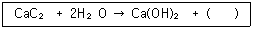
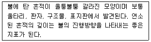

화재감식평가기사 (2015-09-19 기출문제)
1과목: 화재조사론
1. 철의 열적 변형에 대한 설명으로 옳지 않은 것은?
- 녹는점은 660℃이다.
- 적열상태가 되면 연성이 증가한다.
- 수열이 있는 반대방향으로 휜다.
- 산화반응이 일어나 변색된다.
(정답률: 83%)

2. 증거물 수집 용기와 시료 적응성을 연결한 것으로 틀린 것은?
- 종이상자 : 고체
- 금속캔 : 고체, 액체
- 유리병 : 고체, 액체
- 비닐 백 : 액체
(정답률: 75%)
3. 화재패턴 중 폭열에 대한 설명으로 가장 옳은 것은?
- 가열되는 경우에 다른 열팽창 정도로 인해 폭열이 발생하며, 냉각되는 과정에서는 발생하지 않는다.
- 단일 재료에 의해 만들어진 자연석도 폭열이 발생한다.
- 구획실의 바닥면에서 폭열이 발생하는 경우 액체가연물이 연소된 흔적으로 추정할 수 있다.
- 실제 현장에서의 폭열은 열은 받은 부위가 중력에 의해 떨어지며 소음이 발생하지 않는다.
(정답률: 60%)
4. 발화부 주변의 일반적인 연소현상에 대한 설명으로 옳지 않은 것은?
- 발화부를 향해 소락되거나 도괴된다.
- 발화부와 가까울수록 탄화심도가 깊다.
- 목재표면에 발생하는 균열은 발화부와 멀수록 골이 넓어진다.
- 발화부는 일반적으로 밝은 색을 띠며 발화부와 멀어질수록 어두운 빛을 나타낸다.
(정답률: 73%)
5. 메탄 40vol%, 에탄 30vol%, 프로판 30vol%가 혼합되어 있는 혼합성기체의 공기 중 폭발하한계는 약 몇 vol%인가? (단, 각 물질의 폭발범위 메탄 : 5~15vol%, 에탄 : 3~12.4vol%, 프로판 : 2.1~9.5vol%)
- 2.5
- 3.1
- 4.3
- 5.7
(정답률: 78%)
6. 연기에 대한 설명으로 옳지 않은 것은?
- 연기는 공기 중에 부유하고 있는 고체 또는 액체의 미립자이다.
- 건물 내에서 연기의 확산 속도는 수평으로 약 0.5m/s 이다.
- 알코올이 연소될 경우 연기의 색이 진한 검정색을 띤다.
- 고층건물에서 연기를 이동시키는 주요 추진력은 굴뚝효과이다.
(정답률: 79%)
7. 화재현장에서 유리는 화재로 인해 받은 열의 종도에 따라 그 형태가 각기 다르게 나타난다. 이에 대한 설명으로 옳지 않은 것은?
- 열을 받은 유리는 수열방향으로 보다 많이 낙하한다.
- 유리는 열을 받으면 방사형 균열이 발생한다.
- 열을 받은 유리의 조개껍질 모양의 박리는 고온일수록 많고 깊다.
- 유리는 열을 받은 정도가 클수록 용융범위가 넓어진다.
(정답률: 72%)
8. 복사체로부터의 열전달률은 해당물질의 절대온도의 몇 제곱에 비례하는가?
- 5
- 4
- 3
- 2
(정답률: 77%)
9. 혼합가연물의 최소착화에너지에 영향을 미치는 요인에 대한 설명으로 옳은 것은?
- 온도가 높을수록 최소착화에너지는 높아진다.
- 연소범위에 따라서 최소착화에너지는 변한다.
- 가연물의 종류에 따라서 최소착화에너지는 일정하다.
- 혼합된 공기의 산소농도에 따라서 최소착화에너지는 일정하다.
(정답률: 82%)
10. 연소현황 중 완전연소에 대한 설명으로 옳은 것은?
- 산소의 공급이 불충분한 상태에서의 연소현상이다.
- 연소 시 다량의 가연성 가스의 공급이 완전연소의 원인이 된다.
- 탄화수소가 완전연소하면 이산화탄소와 수증기가 생성된다.
- 환기가 제대로 되지 않은 상태에서 실내에 가스기구를 사용하는 경우에 발생한다.
(정답률: 76%)
11. 인화성 및 발화성의 가연물이 연소할 때 중심부의 가연성 액체를 기화시키면서 나타나는 화재패턴은?
- 포워패턴(Pour pattern)
- 레인보우패턴(Rainbow pattern)
- 스프래쉬패턴(Splash pattern)
- 도넛패턴(Doughnut pattern)
(정답률: 82%)
12. 열전달 방식 중 복사에 의한 열전달 사례인 것은?
- 화재현장에서 창문을 파괴하거나 뜨거운 열기가 급격히 분출되었다.
- 대규모 산불현장에서 너무 뜨거워 소방관이 멀리 떨어져 소화활동을 하였다.
- 방바닥이 너무 뜨거워서 발에 화상을 입었다.
- 가마솥에 밥을 다하고 나서 밥 위에 고구마를 넣었더니 20분 만에 익었다.
(정답률: 83%)
13. 화재피해조사 중 건물의 소실정도를 나타내는 것으로 옳은 것은?
- 전소 : 건물의 입체면적 70% 이상 소실
- 반소 : 건물의 입체면적 50% 이상 소실
- 즉소 : 건물의 입체면적 30% 이상 소실
- 부분소 : 건물의 입체면적 50% 미만 30% 이상 소실
(정답률: 87%)
14. 화재원인조사의 조사범위가 아닌 것은?
- 소방활동 중 발생한 사망자 및 부상자
- 화재의 연소경로 및 확대원인 등의 상황
- 피난경로, 피난상의 장애요인 등의 상황
- 화재가 발생한 과정, 화재가 발생한 지점 및 불이 붙기 시작한 물질
(정답률: 79%)
15. 연소의 특성에 대한 설명으로 옳지 않은 것은?
- 연소속도는 재료의 질량유속으로 정의되며 g/m2s로 나타낸다.
- 일반적으로 표면에서의 질량유속은 5~50 g/m2s 범위에 있으며, 그 값이 5 이하인 것은 소화된다.
- 화염속도는 물적조건과 에너지조건인 농도, 압력, 온도보다 난류의 영향으로 가속된다.
- 연소속도는 화학양론비 부근에서 최소가 되고 연소상한계, 연소하한계로 갈수록 연소속도는 증가한다.
(정답률: 75%)
16. 물질의 융점으로 옳은 것은?
- 납 : 327℃
- 구리 : 1540℃
- 파라핀 : 660℃
- 알루미늄 : 54℃
(정답률: 74%)
17. 소방기본법 상 화재조사 기자재 중 감식·감정용 기기가 아닌 것은?
- 절연저항제
- 클램프메타
- 거리측정기
- 복합가스측정기
(정답률: 71%)
18. 조사관의 현장 조사업무로 거리가 먼 것은?
- 현장 탐색
- 관계인 인터뷰
- 증거물의 감정
- 증거수집 및 보존
(정답률: 68%)
19. 분진폭발을 가스폭발과 비교할 때 분진폭발의 특징으로 옳은 것은?
- 최소발화에너지가 크다.
- 연소속도가 빠르다.
- 불완전연소가 적다.
- 연소시간이 짧다.
(정답률: 61%)
20. 화재조사 진행순서로서 가장 옳은 것은?
- 현장관찰 → 관계자질문 → 발굴 → 감정 → 발화원인 판정
- 관계자질문 → 발굴 → 현장관찰 → 감정 → 발화원인 판정
- 관계자질문 → 발굴 → 현장관찰 → 발화원인 판정 → 감정
- 현장관찰 → 발굴 → 관계자질문 → 발화원인 판정 → 감정
(정답률: 84%)
2과목: 화재감식론
21. 항공기에서 화재감지장치(fire detection system)가 설치되지 않는 곳은?
- 화장실(lavatory)
- 연료탱크(fuel tank)
- 바퀴실(wheel well)
- 블리드에어 덕트(bleed air duct)
(정답률: 69%)
22. 절연물이 소규모 방전 또는 고온의 불꽃에 의해 탄화되어 도전성 물질로 되는 것은?
- 접촉불량
- 흑연화
- 반단선
- 단락
(정답률: 65%)
23. 구획실에서 유염(불꽃)화재 연소과정으로 바르게 나열한 것은?
- 점화 → 성장기 → 플래시오버 → 최성기 → 감쇠기 → 소화
- 점화 → 성장기 → 최성기 → 플래시오버 → 감쇠기 → 소화
- 점화 → 최성기 → 성장기 → 플래시오버 → 감쇠기 → 소화
- 점화 → 성장기 → 최성기 → 감쇠기 → 플래시오버 → 소화
(정답률: 78%)
24. 미소화원에 대한 설명으로 옳은 것은?
- 유염화원에 비하여 에너지량이 훨씬 많다.
- 표면적으로 연소가 확대되는 경우가 많다.
- 담뱃불, 향불, 불티 등과 같은 무염화원을 지칭한다.
- 협의로 해석할 때는 나화라고도 하여 유염화원과 구분한다.
(정답률: 80%)
25. 다음의 화학반응식에서 ( )에 발생하는 기체로 옳은 것은?

- C2H2
- C2H4
- C3H6
- C3H8
(정답률: 77%)
26. 다수의 사실로부터 일반적인 사항을 도출해내는 추론방법은?
- 합리적 추론
- 귀납적 추론
- 연역적 추론
- 형식적 추론
(정답률: 66%)
27. 방화의 특징으로 옳지 않은 것은?
- 방화의 원인이 다양하다.
- 방화의 발생은 계절과 상관관계가 높다.
- 용도별로는 주택 및 차량에 대한 방화가 많다.
- 휘발유, 시너 등을 사용하는 경우가 많아 화재확산이 매우 빠르다.
(정답률: 82%)
28. 캡타이어코드(0.75mm2/30본) 0.18mm 한 가닥의 용단전류는 약 몇 A 인가? (단, 재료는 구리로 간주한다.)
- 5.11
- 6.11
- 7.11
- 8.11
(정답률: 55%)
29. 철제 선박화재의 진화가 어려운 이유가 아닌 것은?
- 선박 윗부분으로의 화재확산이 어렵기 때문
- 철판이 열을 다른 구획실로 쉽게 전달하기 때문
- 전기, 유압 시스템 등의 수직 관통부를 통한 대류현상 때문
- 발화부에 인접한 구획실에 존재하는 가연물이 발화온도에 쉽게 도달하기 때문
(정답률: 82%)
30. 표준상태 0℃, 1기압에서 메탄(CH4) 3.2kg을 이상기체 상태방정식으로 계산하면 부피는(L) 얼마인가? (단, 기체상수 R = 0.082 L·atm/mol·K, 탄소 원자량 : 12, 수소 원자량 : 1로 계산한다.)
- 447.7
- 4477.2
- 223.8
- 2238.6
(정답률: 52%)
31. 유류를 이용한 자살 방화 현장의 특징으로 옳지 않은 것은?
- 유류를 사용한 용기가 존재한다.
- 우발적이기보다는 계획적으로 실행한다.
- 연소면적에 비해 탄화심도가 깊다.
- 급격한 연소 확대로 연소의 방향성 식별이 어렵다.
(정답률: 67%)
32. 석유류의 연소특성에 대한 설명으로 옳지 않은 것은?
- 휘발성이 낮은 중질유는 미세한 크기로 미립화하여 분무연소한다.
- 원유탱크의 화재가 장시간 지속되면 고온층이 형성되어 유류화재의 위험한 현상들이 나타날 수 있다.
- 대부분의 석유류가 포함되어 있는 제4류 위험물은 인화점이 높고, 연소하한계가 높아서 화재위험성이 크다.
- 휘발유, 등유는 증기비중이 공기보다 크기 때문에 증발한 증기는 낮은 곳에 체류한다.
(정답률: 64%)
33. LPG 차량의 충전밸브에 부착된 안전밸브의 작동 압력은?
- 14 kgf/cm2
- 16kgf/cm2
- 24kgf/cm2
- 26kgf/cm2
(정답률: 74%)
34. 다음에서 설명하는 산불 진행방향의 지표는?

- 초본류 줄기 지표
- 보호된 연료의 지표
- 불탄 흔적의 각도 지표
- 엘리게이터링
(정답률: 70%)
35. 임야화재에 영향을 주는 3대 중요 요소가 아닌 것은?
- 기후
- 지형
- 가연물
- 점화원
(정답률: 80%)
36. 방화의 직접적 단서가 될 수 없는 것은?
- 도화선(Trailer)
- 색다른 촉진제
- 비정상적인 연료하중
- 출입문의 잠김 상태
(정답률: 71%)
37. 유류성분 감정기구인 가스크로마토그래피 분석의 장점으로 거리가 먼 것은?
- 물질이 유사한 여러 성분의 혼합계 분리에 매우 유효하다.
- 가스 상태로 분석하기 때문에 조작도 간단하고 시간도 빠르다.
- 각 성분을 검출하여 그 양을 전기적인 신호로 기록계에 저장하고 도형적으로 기록함으로써 분석결과가 객관적이다.
- 현장조사 시 휴대 및 가스 포집이 간편하며 성분판별이 가능하다.
(정답률: 71%)
38. 물질의 상태에 대한 설명으로 옳은 것은?
- 물의 증발잠열은 80 cal/g 이다.
- 액체상태에서 에너지를 제거하면 기체상태가 된다.
- 온도 변화없이 상태 변화를 위해 필요한 열을 잠열이라 한다.
- 분자 간의 질소도는 기체 ＞ 액체 ＞ 고체의 순이다.
(정답률: 74%)
39. 측정원리에 의한 분류 중 산업용으로 사용되는 추축식 가스계량기에 해당하는 것은?
- 터빈형
- 드럼(drim)형
- 회전식(루트식)
- 막식(다이어프램식)
(정답률: 76%)
40. 일반화재와 구별되어야 하는 차량화재의 특수성에 대한 설명으로 옳지 않은 것은?
- 차량은 동력기계계통, 전기전자계통, 연료공급계통, 배기계통 등 기구의 복잡성이 있다.
- 연료, 시트 등 화재 하중이 낮고, 외기에 개방된 상태인 환기지배형 화재의 특서을 보인다.
- 다양한 부착물 및 이의 변·개조가 용이하므로, 이러한 구조적 특수성에 의한 화재위험성에 노출되어 있다고 볼 수 있다.
- 차량은 개방된 공간에 존치되는 특수성에 의해 사회적 불만이나 주차불만을 가진 자가 불특정한 방법으로 방화할 개연성이 높다고 볼 수 있다.
(정답률: 83%)
3과목: 증거물관리 및 법과학
41. 인화점 측정을 위한 장비가 아닌 것은?
- Pensky-Martens
- Tag Closed Cup
- Cleveland Open Cup
- Scanning Electron Microscope
(정답률: 76%)
42. 화재현장 보존을 위한 소방인력의 역할 및 주의사항에 대한 설명으로 옳지 않은 것은?
- 잔화 정리하는 동안 남아있는 증거물이 훼손될 수 있으므로 주의하여야 한다.
- 화재현장에 있는 설비, 기구, 장비 또는 시설의 손잡이를 돌리거나 작동 스위치릴 켜는 것을 자제하여야 한다.
- 화재현장에서 가솔린이나 디젤 연료로 작동되는 도구 및 설비를 사용하는 것은 자제하는 것이 좋다.
- 화재현장에 대한 접근은 소방 화재조사관만으로 한정한다.
(정답률: 84%)
43. 현장사진촬영의 필요성에 대한 설명 중 옳지 않은 것은?
- 기록과 사진, 영상 모두 한계가 있으므로 문제가 해결될 때 까지 현장을 보존하는 것이 가장 중요하다.
- 사진을 보는 사람이 실제적인 감각으로 느끼게 함으로써 그 때의 상화아을 충분히 전달할 수 있는 것이 중요하다.
- 현장조사 시 실수로 빠트렸거나 수집이 불가능했던 많은 정보와 사실들을 사진을 통해 얻을 수 있다.
- 화재현장의 소손상황, 감식·감정의 대상이 되는 관계물건 등의 상황을 정확하게 기록하는 수단으로서 사진과 영상이 중요하다.
(정답률: 80%)
44. 물적증거의 종류에 해당하는 것은?
- 관계가 진술
- 감정인 소견
- 유류 용기
- 증언
(정답률: 85%)
45. 화재여로 파손된 유리의 특징으로 옳은 것은?
- 리플마트가 형성된다.
- 거미줄형태로 파손된다.
- 방사형 형태로 깨진다.
- 구불구불한 불규칙한 형태로 깨진다.
(정답률: 58%)
46. 전선 중 연선이 절연피복 내에서 일부 단선되어 그 부분에서 단선과 이어짐을 되풀이하는 상태는?
- 반단선
- 트래킹
- 흑연화
- 누전
(정답률: 78%)
47. 화상의 중증도를 분류하는 가장 큰 요소는?
- 화상의 부위
- 화열의 강도
- 피부의 색
- 화상의 깊이 및 범위
(정답률: 78%)
48. 물리적 증거의 오염 위험이 가장 높은 단계는?
- 증거물의 수집
- 증거물의 운송
- 증거물의 보존
- 증거물의 감정
(정답률: 75%)
49. 1기압 25℃에서 연소하한계가 가장 높은 물질은?
- 프로판
- 부탄
- 메탄
- 일산화탄소
(정답률: 50%)
50. 화재증거물 수집 시 고려해야 할 사항에 대한 설명으로 옳지 않은 것은?
- 물리적 상태(고체, 액체, 기체)를 고려하여 수집
- 휘발성이 낮은 것에서 높은 순서로 수집
- 물리적 특성(크기, 모양, 무게 등)을 고려하여 수집
- 파손성을 감안하여 수집
(정답률: 82%)
51. 증거물의 수집에 관한 고려사항으로 가장 옳은 것은?
- 등유와 같은 탄화수소계 액체 위험물은 물과 쉽게 혼합된다.
- 화재 촉진제로 사용되는 휘발유와 같은 인화성 액체는 상온에서 자연발화하지 않는다.
- 경유와 같이 흔히 사용되는 화재 촉진제 증기는 공기보다 더 가볍다.
- 고체 표본을 수집할 때 용기에 3/4 이상 채운다.
(정답률: 68%)
52. 화재현장 촬영 시 유의사항이 아닌 것은?
- 각 방위별로 출화의 방향성에 착안하여 구조물의 형태를 확인하여 촬영한다.
- 발화건물과 인접 도로 및 주변 건물과 경계선을 파악하여 촬영한다.
- 높은 곳에서 전체를 관찰하고 연소 확대 상황을 관찰하여 촬영한다.
- 너무 많은 사진 자료는 혼란을 야기하므로 사진 촬영은 발화대상물에만 초점을 맞추어 촬영한다.
(정답률: 84%)
53. 카메라에서 얇은 금속날개를 이용하여 원하는 크기의 렌즈구경을 만들고 빛의 양을 조절하는 것은?
- 플레어
- 감도
- 셔터
- 조리개
(정답률: 80%)
54. 화재증거물수집관리규칙상 수집한 증거물 이송시 포장을 하고 상세정보를 기록할 사항이 아닌 것은?
- 수집일시 및 증거물번호
- 수집장소 및 수집자
- 증거물 내용 및 봉인자
- 소유자 및 관리자 성명
(정답률: 79%)
55. 일산화탄소 중독사의 특징으로 볼 수 있는 것은?
- 선홍색 시반이 나타난다.
- 수포주위에 홍반이 생긴다.
- 코에서 출혈이 심하게 나타난다.
- 피부의 세포조직이 검게 타는 탄피층이 형성된다.
(정답률: 78%)
56. 화재현장의 증거물 시료 채취 시 유의사항이 아닌 것은?
- 가급적 증거물 전체를 수집 또는 채취
- 동일한 물질이 있을 때는 채취하지 않고 내용만 기술
- 채취된 증거물의 물질이 상이할 때에는 서로 섞이지 않도록 분리하여 채취, 보관
- 감정의뢰서에 증거물을 수집, 채취한 경과와 사건개요를 기술
(정답률: 78%)
57. 화재조사와 관련한 질문의 원칙으로 옳지 않은 것은?
- 질문을 할 때에는 시기, 장소 등을 고려하여 피질문자의 임의진술을 얻도록 하여야 한다.
- 질문을 할 때에는 기대나 희망하는 진술내용을 얻기 위하여 상대방에게 암시하는 등의 방법으로 임의진술을 하여야 한다.
- 소문 등에 의한 사항은 그 사실을 직접 경험한 사람의 진술을 얻도록 하여야 한다.
- 관계자 등에 대한 질문 사항은 질문기록서에 작성하여 그 증거를 확보한다.
(정답률: 80%)
58. 증거물 관리에 대한 설명으로 옳은 것은?
- 어떠한 종류의 증거물이 발견되거나 조심스럽게 보존되었다면 완벽하게 관리되거나 문서로 기록되지 않더라도 증거로서 가치가 있다.
- 증거목록의 전달에 있어서 인수자의 서명과 전달일자와 시간만 기록되면 된다.
- 증거물의 파손을 최소화하기 위해서는 증거물을 취급하는 사람의 수를 최소화해야 한다.
- 여러 사람이 같은 범죄현장에서 증거를 찾고 있다면 각각 증거기록을 유지하는 것이 바람직히다.
(정답률: 64%)
59. 화염과 접촉할 때 연소성이 가장 낮은 것은?
- 아크릴
- 나일론
- 양모
- 유리섬유
(정답률: 73%)
60. 현장사진의 범주에 들지 않는 대상은?
- 증거물
- 출동 전 소방차 배치사진
- 화재현장에서 발견된 물건
- 화재조사현장과 관련된 사람
(정답률: 77%)
4과목: 화재조사보고 및 피해평가
61. 화재피해액 산정과 관련된 용어 정의 중 옳지 않은 것은?
- 재구입비는 화재 당시의 피해물과 똑같은 것을 구입하는 데 필요한 금액에 감가상각을 반영한 것을 말한다.
- 잔가율은 화재 당시에 피해물의 재구입비에 대한 현재가의 비율을 말한다.
- 내용연수란 고정자산을 경제적으로 사용할 수 있는 연소를 말한다.
- 연소확대물은 연소가 확대되는데 있어 결정적 영향을 미친 가연물을 말한다.
(정답률: 47%)
62. 화재조사 및 보고규정상 구분하는 화재의 유형이 아닌 것은?
- 건축·구조물 화재
- 임야화재
- 위험물·가스제조소 화재
- 공장화재
(정답률: 60%)
63. 재고자산 화재피해액의 산정방법 중 가장 처음으로 산정해야 하는 방식은?
- 간이평가 방식
- 회계장부상 현재가액 산정방식
- 물가정보지 현재가액 산정방식
- 재구입비, 감가공제 등을 통한 실질적·구체적 방식
(정답률: 58%)
64. 집기비품의 소손 정도에 따른 손해율 30%에 해당하는 것은?
- 손해정도가 보통인 경우
- 손해정도가 다소 심한 경우
- 오염·수침손의 경우
- 50%이상 소손되거나, 수침오염 정도가 심한 경우
(정답률: 73%)
65. 화재현장 조사서에서 발화열원의 분류 항목인 것은?
- 부주의
- 전기적 요인
- 폭발물, 폭죽
- 가스누출(폭발)
(정답률: 67%)
66. 화재 사후조사에 대한 화재발생종합보고서 작성요령으로 옳은 것은?
- 소방대가 출동하지 아니한 화재장소의 화재 증명원 발급요청이 있는 경우 조사관이 주관적으로 판단하여 사후조사를 실시한 후 보고서를 작성한다.
- 사후조사는 발화장소 및 발화지점 등 현장이 보존되어 있는 경우 조사를 할 수 있다.
- 사후조사의 경우에도 화재현장 출동보고서를 반드시 작성하여야 한다.
- 사후조사의 경우 화재발생종합보고서는 화재 조사 및 보고규정의 서식이 아닌 별도의 서식에 의해 작성한다.
(정답률: 73%)
67. 화재현장조사서 작성에 대한 설명으로 옳지 않은 것은?
- 화재현장조사서의 기재에 있어서 조사자의 주관적 의사나 판단이 개입되도록 표현하는 것은 바람직하지 못하다.
- 조사서의 작성자가 조사현장에서 도출된 발화원인 등의 결론을 언급한 용어를 사용하는 것은 부적절하다.
- 형용사를 사용하여 문장을 강조하는 것은 조사서의 객관성 유지에 지장을 줄 수 있다.
- 입회인의 설명내용과 조사원의 관찰·확인 사실은 구분하지 않고 정리한 뒤 작성한다.
(정답률: 71%)
68. 아파트에서 부주의로 화재가 발생하여 한쪽 벽면 6m2와 천장 14m2가 소실되었다. 이 경우 화재피해 조사서(재산) 작성 시 소실면적은?
- 1.6m2
- 4m2
- 8m2
- 20m2
(정답률: 73%)
69. 화재조사 및 보고규정상 화재로 인한 재산피해의 범위에 해당하지 않는 것은?
- 화재로 인한 영업손실의 피해
- 연기에 의한 그을음 피해
- 소화활동으로 발생한 수손 피해
- 열에 의한 탄화, 용융, 파손 피해
(정답률: 80%)
70. 화재조사 및 보고규정에 따르면 관할구역 내에서 발생한 화재에 대하여 작성해야 하는 서류가 아닌 것은?
- 화재발생종합보고서
- 질문기록서
- 화재현장 출동보고서
- 범죄사실 보고서
(정답률: 76%)
71. 시중매매가격에 의해 화재피해액을 산정하는 것이 아닌 것은?
- 차량의 전부손해
- 귀금속의 전부손해
- 식물의 전부손해
- 동물의 전부손해
(정답률: 60%)
72. 화재 등으로 인한 피해액 산정에 있어 최종잔가율 20%를 적용할 수 없는 것은?
- 건물
- 부대설비
- 비품
- 가재도구
(정답률: 73%)
73. 영업시설의 피해약 산정 시에 개·보수한 때를 기준으로 경과연수를 산정하는 것은 재설치비의 몇 % 이상 개·보수한 경우인가?
- 50
- 60
- 70
- 80
(정답률: 53%)
74. 화재조사 서류작성 및 보고요령으로 옳지 않은 것은?
- 화재보고는 최초복, 중간보고, 최종보고로 구분한다.
- 최종보고는 화재종류 후 최초보고, 중간보고를 취합하여 보고한다.
- 최초보고는 선착대가 현장도착 즉시 현장지휘관 책임하에 화재규모, 인명피해 발생여부, 건물구조 개요, 정확한 재산피해 내역을 보고하여야 한다.
- 중간보고는 최초보고 후 화재상황 진전에 따라 연소확대 여부, 인명구조 및 진압활동 상황, 화재원인 및 재산피해 등을 수시로 보고한다.
(정답률: 78%)
75. 화재현황조사서에 기입해야 할 항모깅 아닌 것은?
- 화재발생 일시 및 장소
- 기상상황
- 인명피해 및 재산피해
- 소방시설 현황
(정답률: 40%)
76. 최종잔가율에 대한 설명으로 옳은 것은?
- 고정자산을 경제적으로 사용할 수 있는 비율을 말한다.
- 화재 당시에 피해물의 재구입비에 대한 현재가에 비율을 말한다.
- 피해물의 종류, 손상상태 및 정도에 따라 피해액을 적정화시키는 비유를 말한다.
- 피해물의 경제적 내용연소가 다한 겨우 잔존하는 가치의 재구입비에 대한 비율을 말한다.
(정답률: 73%)
77. 부대설비의 화재피해로 인한 소손정도에 따른 손해율 20%에 해당하는 피해정도는?(오류 신고가 접수된 문제입니다. 반드시 정답과 해설을 확인하시기 바랍니다.)
- 손해정도가 상당히 심한 경우
- 손해정도가 다소 심한 경우
- 손해정도가 보통적인 경우
- 손해정도가 경미한 경우
(정답률: 48%)
78. 화재조사를 화재원인조사와 화재피해조사로 구분할 때 화재원인조사 범위에 해당하는 것은?
- 화재지안 중 발생한 사망자 및 부상자
- 소화할동으로 발생한 수손
- 피난경로, 피난상의 장애요인
- 화재로 인한 사망자 및 부상자
(정답률: 72%)
79. 건물의 화재피해약 산정기준 공식으로 옳은 것은?
- 신축단가(m2당) × 소실면적 × [1 - (0.6 × 경과년수 / 내용년수)] × 손해율
- 신축단가(m2당) × 소실면적 × [1 - (0.7 × 경과년수 / 내용년수)] × 손해율
- 신축단가(m2당) × 소실면적 × [1 - (0.8 × 경과년수 / 내용년수)] × 손해율
- 신축단가(m2당) × 소실면적 × [1 - (0.9 × 경과년수 / 내용년수)] × 손해율
(정답률: 81%)
80. 발화원인의 판정방법 중 소거법에 가장 가까운 것은?
- 분석·측정기기 등에 의한 데이터의 제시
- 재현실험에 의한 재현성의 확보
- 유사화재 사례의 유무 확인
- 화원 각각에 대하여 발화원으로서 가능성 검토
(정답률: 58%)
5과목: 화재조사관계법규
81. 신체손해배상 특약부 화재보험의 설명으로 틀린 것은?
- 발가락을 잃은 것이란 발가락 말단의 2분의 1이상을 잃은 경우를 말한다.
- 흉타거 남은 것이란 성형수술을 하였어도 육안으로 식별이 가능한 흔적이 있는 상태를 말한다.
- 항상 보호를 받아야 하는 것은 일상생활에서 기본적인 음식섭취, 배뇨 등을 타인에게 의존해야 하는 것을 말한다.
- 수시로 보호를 받아야 하는 것은 일상생활에서 기본적인 음식섭취, 배뇨 등은 가능하나 그 외의 일은 타인에게 의존해야 하는 것을 말한다.
(정답률: 62%)
82. 화재조사 및 보고규정에서 정하는 화재의 정의에 포함되지 않는 내용은?
- 사람의 의도에 반하여 발생한 화재로 소화할 필요가 있는 연소현상
- 사람의 고의에 의하여 발생한 화재로 소화할 필요가 있는 연소현상
- 소화시설 등을 사용하여 소화할 필요가 있는 연소현상
- 압력을 동반한 물리적 폭발현상
(정답률: 85%)
83. 운행중인 차량, 선박 및 항공기에서 발생한 화재의 조사책임은?
- 화재신고를 초최 접수한 소방본부장 또는 소방서장
- 소화활동을 행한 소방본부장 또는 소방서장
- 차량, 선박 및 항공기 등록지를 관할하는 소방본부장 또는 소방서장
- 소화활동을 행한 장소를 관할하는 소방본부장 또는 소방서장
(정답률: 70%)
84. 제조물 책임법상의 피해자가 손해 및 손해배상책임을 지는 자를 알게 된 날부터 손해배상 청구권은 몇 년간 행사하지 않으면 소멸하는가?
- 10년
- 5년
- 3년
- 1년
(정답률: 75%)
85. 보일러, 고압가스 기타 폭발성 있는 물건을 파열시켜 사람의 생명, 신체 또는 재산에 대하여 위험을 발생시키는 범죄명은?
- 폭발성물건파열죄
- 방화죄
- 파열죄
- 신체상해죄
(정답률: 79%)
86. 소방법령에서 정하고 있는 화재조사에 대한 내용으로 옳지 않은 것은?
- 소방서장은 화재조사 원인 및 피해 등에 대한 조사를 하여야 한다.
- 수사기관이 증거물을 압수한 때에는 소방서장은 그 증거물에 대한 조사가 불가능하다.
- 소방서장은 화재조사에 필요한 겨우, 관계인에 대하여 자료제출을 명할 수 있다.
- 화재조사를 하는 소방공무원이 관계인의 정당한 업무를 방해한 경우, 벌금에 처한다.
(정답률: 87%)
87. 한국화재보험협회에서 보험계약을 체결할 때 실시하는 특수건물의 안전점검 내용으로 옳은 것은?
- 안전점검이 필요하다고 인정될 때 관계인의 승낙 없이도 검사를 실시할 수 있다.
- 협회는 안전점검을 실시하고자 할 때에는 24시간 전에 관계인에게 통지하여야 한다.
- 안전점검을 실시하는 자는 안전점검을 함에 있어서 관계인의 업무를 방해하거나 지득한 비밀을 누설하여서는 아니 된다.
- 안전점검은 관계인의 업무를 방해하지 않도록 일출전 또는 일몰후에 실시하여야 한다.
(정답률: 79%)
88. 소방기본법상 소방자동차가 화재진압 및 구조·구급 활동을 위하여 출동하는 때에 이를 방해하는 자에 대한 벌칙은?(오류 신고가 접수된 문제입니다. 반드시 정답과 해설을 확인하시기 바랍니다.)
- 5년이하의 징역 또는 3천만원 이하의 벌금
- 5년이상의 징역 또는 5천만원 이하의 벌금
- 3년이하의 징역 또는 1천500만원 이하의 벌금
- 2년이하의 징역 또는 1천만원 이하의 벌금
(정답률: 29%)
89. 신체손해배상특약부 화재보험과 관련한 후유장해의 설명으로 틀린 것은?
- 신체장해가 2 이상 있을 경우에는 중한 신체장해에 해당하는 장해등급으로 한다.
- 시력의 측정은 국제식 시력표에 의하며, 굴절이상이 있는 사람에 대하여는 원칙적으로 교정시력을 측정한다.
- 손가락을 잃은 것이란 엄지손가락에 있어서는 지관절, 기타의 손가락에 있어서는 제1관절 이상을 잃은 경우를 말한다.
- 손가락을 제대로 못 쓰게 된 것이란 손가락의 말단의 2분의 1 이상을 잃거나, 중수지관절 또는 제1지관절에 뚜렷한 운동장해가 남은 경우를 말한다.
(정답률: 48%)
90. 화재 시 소화기를 사용 못 하도록 하거나 옥내소화전을 파괴하는 등의 행동을 했다면 형법에 의하여 어떤 처벌을 받을 수 있는가?
- 10년 이하의 징역
- 7년 이하의 징역
- 3년 이하의 금고
- 1천 5백만원 이하의 벌금
(정답률: 74%)
91. 특수건물에서 발생한 화재로 부상자가 발생한 경우 상해부위를 상해급별로 구분하였을 때 9급에 해당하는 것은?
- 상박골경부골절
- 대퇴골간부골절
- 수근주상골골절
- 요골골두골골절
(정답률: 55%)
92. 소방법령상 화재피해조사의 조사범위로 가장 거리가 먼 것은?
- 소화활동 중 사용된 물로 인한 피해
- 소방활동 중 발생한 사망자 및 부상자
- 연기, 물품반출, 화재로 인한 폭발 등에 의한 피해
- 소화활동으로 발생한 영업 손실 피해
(정답률: 81%)
93. 업무상과실 또는 중대한 과실로 인하여 실화의 죄를 범한 자에 대한 벌칙은?
- 3년 이하의 금고 또는 1천5백만원 이하의 벌금
- 3년 이하의 금고 또는 2천만원 이하의 벌금
- 2년 이하의 징역 또는 1천5백만원 이하의 벌금
- 2년 이하의 징역 또는 2천만원 이하의 벌금
(정답률: 49%)
94. 화재증거물수집관리규칙상 화재현장 증거물은 화재증거 수집의 목적달성 후에는 어떻게 하여야 하는가?
- 3년까지 보존하여야 한다.
- 10년까지 보존하여야 한다.
- 관계인에게 반환하여야 한다.
- 즉시 폐기하여야 한다.
(정답률: 77%)
95. 화재로 인한 재해보상과 보험가입에 관한 법률에 따르면 화재보험협회가 보험계획을 체결할 때 또는 보험계약을 갱신할 때마다 해당특수건물의 화재예방 및 소화시설의 안전점검을 실시하고 그 결과를 며칠 이내에 소방관서의 장에게 통지하여야 하는가?
- 즉시
- 10일
- 20일
- 30일
(정답률: 40%)
96. 현주건조물 등에의 방화한 사람에게 가하는 벌칙으로 옳지 않은 것은?
- 사람을 상해에 이르게 한 때에는 무기 또는 5년 이상의 징역
- 사람을 사망에 이르게 한 때에는 사형, 무기 또는 7년 이상의 징역
- 사람이 주거로 사용하거나 사람이 현존하는 건조물, 기차, 전차, 자동차, 선박, 항공기 또는 광갱을 소훼한 자는 무기 또는 3년 이상의 징역
- 자기 소유에 속한 물건을 소훼한 때에는 5년 이하의 징역
(정답률: 57%)
97. 제조물 책임법상 제조상의 결함에 해당되는 것은?
- 제조사가 합리적인 대체설계를 채용하였더라면 피해나 위험을 줄이거나 피할 수 있었음에도 대체설계를 채용하지 아니하여 당해 제조물이 안전하지 못한 경우
- 제조업자의 제조물에 대한 제조·가공상의 주의의무의 이행여부와 관계없이 제조물이 원래 의도한 설계와 다르게 제조·가공됨으로써 안전하지 못한 경우
- 제조업자가 합리적인 설명·지시·경고 기타의 표시를 하였더라면 당해 제조물에 의하여 발생될 수 있는 피해나 위험을 줄이거나 피하 수 있었음에도 이를 하지 않은 경우
- 제조업자가 물류·유통과정에서 발생할 수 있는 위험을 인지하지 못하여 제조물의 파손을 초래한 경우
(정답률: 73%)
98. 형법성 공용건조믈 등에의 방화죄에 대한 벌칙은?
- 무기 또는 3년 이상의 징역
- 무기 또는 3년 이하의 징역
- 10년 이상의 징역
- 1년 이상의 징역
(정답률: 31%)
99. 화재를 유형에 따라 구분한 것으로 잘못된 것은?
- 피견인차량이 소손된 경우, 자동차·철도차량 화재에 해당된다.
- 구조물 안에 있는 물건이 소손된 경우, 건축·구조물 화재에 해당된다.
- 경작물이 소손된 경우, 기타화재에 해당된다.
- 들판의 수목이 소손된 경우, 임야화재에 해당된다.
(정답률: 74%)
100. 화재조사 및 보고규정에서 정하는 건물의 동수산정에 대한 설명으로 옳지 않은 것은?
- 주요구조부가 하나로 연결되어 있는 것은 1동으로 한다.
- 건물의 외벽을 이용하여 실을 만들어 작업실로 사용하고 있는 것은 주건물과 1동으로 본다.
- 구조에 관계없이 지붕 및 실이 하나로 연결되어 있는 것은 별동으로 본다.
- 목조건물의 경우 격벽으로 방화구획이 되어 있는 경우 동일동으로 한다.
(정답률: 78%)
적열상태가 되면 연성이 증가하는 것은 맞다. 철은 고온에서 연성이 증가하며, 이는 철이 열을 받아 분자 운동이 증가하면서 결정 구조가 변화하기 때문이다.
수열이 있는 반대방향으로 휜다는 것도 맞다. 철은 열을 받으면 수열이 생기며, 이 수열이 생기면 철은 그 방향으로 휜다.
산화반응이 일어나 변색된다는 것도 맞다. 철은 공기 중에서 산화되어 철산화물이 생기면서 검은색으로 변색된다.
따라서, "녹는점은 660℃이다."가 옳지 않은 것은 맞지만, 이유를 설명하면 철은 1535℃에서 녹는다.